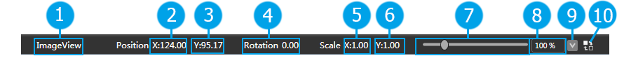

状态栏
简介

状态栏显示当前所选控件（单选）的属性以及对渲染区缩放系数的调整。
功能
控件状态
 |
控件名称 |
| 控件起始位置X | |
 |
控件起始位置Y |
| 控件旋转角度 | |
| 控件X轴缩放倍数 | |
 |
控件Y轴缩放倍数 |
| 渲染区缩放滑动条 | |
 |
渲染区缩放值输入框 |
| 快速选择缩放倍数下拉框 | |
| 恢复缩放默认值 |
调整缩放系数
- 拖动滑动条
- 再输入框中直接输入缩放百分比
- 选择下拉菜单中的值
恢复缩放系数
点击恢复按钮即可恢复缩放渲染区缩放系数。
Copyright © 2013 CocoStudio.org. All Rights Reserved. 版本v1.0.0